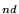

Your assignment is to write a program which solves the ``All-Pairs Minimum Path''
problem for a directed graph. You must turn in your program by 5 pm, Thursday, December
18. I would prefer that you give me a printout, either in my office or at the time of
the in-class exam; if you come by my office (Julian 266) and I am not there, slip the
printout under the door. I will also accept solutions as attachments to email
(bhoward@depauw.edu); I will not look for programs on Jupiter, since I
need a positive indication that you are submitting your final version (you may submit
multiple versions to correct errors--I will only grade the last one submitted before
5:00 on the 18th). You may discuss this problem with anyone, but the code you submit
must be your own; if I determine that two submissions are too similar, I will give both
parties a 0 on this portion of the exam. This project will count as 20% of the final
exam grade.
You may use the graph class from the book, which is defined in the file
d_graph.h (in the usual directory: /home/libs/dataStr/ftsoftds/include).
Note that the input format described below matches that expected by this class, so you
may read a graph declared with graph<char> g by simply saying cin >> g.
It would also be reasonable to work directly with an adjacency matrix representation;
for this, or for storing the distance table in either case, you may want to use the
matrix class from Chapter 5, which is defined in d_matrix.h.
The input should be read from the console (cin). Recall that you may run a
program with its input taken from a file by following the name of the program with a
< and the name of the file: for example, ./minpath <test.dat runs the
program minpath from the current directory, using test.dat for input
instead of waiting for the user to type something. Your program should not prompt the
user for anything; it should just read its input, compute the answer, print it out, and
exit.
The input will have the following format:
v A B ... e X1 Y1 w1 X2 Y2 w2 ...The first line will contain v, the number of vertices (which will be at most 26). The following v lines will give the names of the vertices, which will always be consecutive upper-case letters starting with
A (this is redundant, but it makes
using the book's graph class easier). The
v + 2 line will contain
e, the number of edges. The final e lines will describe each edge by giving the
starting vertex, ending vertex, and integer weight (the distance from the first vertex
to the second). Here is an example:
3 A B C 2 A B 9 B C 35(Note that this is the same ``Greencastle-Cloverdale-Indianapolis'' example I did in class, but with single-character names to make things simpler.)
The output should be something like the following:
A B C
A 0 9 44
B -1 0 35
C -1 -1 0
This table gives the shortest distance in the graph from the vertex on each row to the
vertex on each column. If there is no path from one vertex to another, the distance
should be given as -1 (note that when I did the above example in class, I was
assuming an undirected graph, but for this program you should use a directed
graph). Again, the vertex labels are redundant, since they will always be A,
B, ..., but you should put them in to make the output easier to read.
One algorithm to compute this table is Dijkstra's Minimum-Path Algorithm, described in
Section 16-6 of the text. The form given in the book only computes the distance between
one pair of vertices. It would be inefficient to call it v2 times to compute the
distance between each pair, but an examination of the code reveals that it computes an
entire row of the table at once: that is, in the process of finding the minimum path
from X to Y, it also computes the minimum path distance from X to every other
vertex. Therefore, one strategy is to modify the function minimumPath (which is
actually defined in d_galgs.h) so that it returns all of the dataValue
fields in a vector or map, then call it once for each starting vertex. It also needs to
be modified so that it doesn't stop as soon as the ending vertex is found (just remove
the test for this and let it run until the queue is empty). The disadvantage of this
approach is that it requires modifying the header files, since the graph class
does not allow clients to access enough information (at a minimum, you would need to
declare that your modified minimumPath function is a friend of the class).
Another algorithm is less efficient on sparse graphs, but is easy to write as a client
of the graph class. It is credited to Floyd, although several other people
discovered essentially the same algorithm (Warshall, for example). The strategy is to
initially load the table with all of the direct connections between vertices, putting 0
on the diagonal, and filling all of the other entries with -1. For the above
example, this gives
A B C
A 0 9 -1
B -1 0 35
C -1 -1 0
Now make v passes over the table. On pass number k (where pass 0 corresponds to
vertex A, 1 corresponds to B, etc.), look at each entry in turn. For the
entry giving the distance from vertex i to vertex j, compare it with the table's
distance to go from i to k and then from k to j; if both of these other
distances exist (that is, they are not -1) and if their sum is smaller than the
current distance from i to j (or if there currently is no path from i to j),
then replace the entry with the smaller distance. The idea is that each pass considers
paths that use k as an intermediate point; after all v passes (using O(v3) time),
all of the intermediate points will have been considered and the resulting table will
give the desired minimum distances.
There will be test input files and corresponding example output in
/home/libs/dataStr/finpp. For example, if your program is named
minpath, then running minpath <test1.dat should produce
essentially the same output as cat test1.out. That folder also
contains the compiled version of my model solution, if you want to run
it on other test cases.